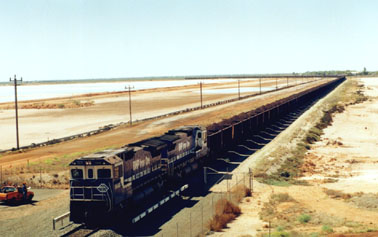

<< 17/33 >>
マウントニューマン鉄鉱山から鉄鉱石を運ぶ列車です。時速５０～６０ｋｍ位で走行しています。
何かあっても簡単に止まらないので速度を上げれません。列車の長さは凡そ２．５ｋｍです。
前に２両、中間に２両のディーゼル機関車が牽引しています。走行状況は宇宙衛星で監視していて
車輪の軸受け温度が判るようになっています。万が一温度が高くなりすぎたら壊れますので、列車を
停止して、ポートヘドランドから修理に行くそうです。
１回に運ぶ鉄鉱石は凡そ２万トンです。運搬距離は４００ｋｍです。
